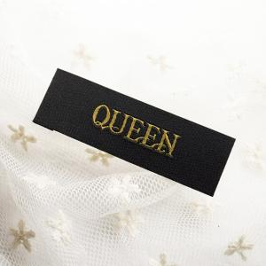
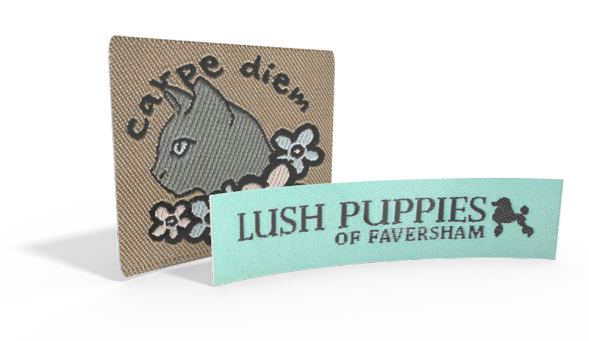

订单下降来自哪些客户、产品和环节？不能只用“大环境不好”解释。
ZHONGSHUN · BUSINESS WORKBOOK
先看清问题，再选择增长动作。
织唛厂企业诊断与行动地图。把经营信息、待验证判断和执行建议放在同一处：左边看问题，右边看方法，往下看验证结果。
织唛厂企业诊断与行动地图。把经营信息、待验证判断和执行建议放在同一处：左边看问题，右边看方法，往下看验证结果。
先保住有利润的订单，再用小范围实验寻找新增客户。
订单下降来自哪些客户、产品和环节？不能只用“大环境不好”解释。
大单看贡献和账期，小单看服务工时；有空闲产能也要守住接单底线。
国内验证稳定复单客户，海外验证需求与净收益。先小范围测试，再增加投入。
经营反馈来自原有对话，未视为审计数据。待验证证据不足的判断。建议动作尚未代表已执行。
先按样品和规格让工厂独立报价，再核算跨境成本。公开售价采集：2026 年 10 月 25 日；工厂报价待填写。
定制高密度 damask 织唛 · 500 枚起订

| 数量 | 订单总价 | 折算单价 | 人民币约 / 枚 |
|---|---|---|---|
| 500 枚 | MXN 2,250 | MXN 4.50 | ¥1.61 |
| 1,000 枚 | MXN 4,275 | MXN 4.275 | ¥1.53 |
人民币订单总额约 ¥804 / ¥1,527。单价按网页订单总价除数量计算，四舍五入可能与官网更长的小数不同。
给姑妈的报价要求：按展开 55×12mm、折后 45×12mm、两端折边报价，分别报 500 / 1,000 枚；黑底金字请区分普通黄色线与金属金线。照片只有参考效果，精细文字需看原稿。
聚酯提花定制织唛 · 100 枚起订

| 数量 | 订单总价 | 折算单价 | 人民币约 / 枚 |
|---|---|---|---|
| 100 枚 | €101.50 | €1.015 | ¥7.59 |
| 500 枚 | €156.50 | €0.313 | ¥2.34 |
| 1,000 枚 | €239.50 | €0.2395 | ¥1.79 |
人民币订单总额约 ¥759 / ¥1,170 / ¥1,790。自有 Logo、颜色及折法确认后，需要重新核价。
给姑妈的报价要求：按上面的估价口径报 100 / 500 / 1,000 枚；先判断照片里类似的文字和图案能否生产，注明密度及最低文字尺寸。需要准确复刻时，再补清晰稿件。
明天先填出厂价格；暂不使用“2—3 分”代入这两款。下面可打印手写，报价尚未录入网站。
| 项目 | MX-01 墨西哥样本 | ES-01 西班牙样本 |
|---|---|---|
| 能否按参考工艺生产 / 替代方案 | ________________ | ________________ |
| 100 枚：出厂单价 / 总价（人民币） | 非卖家数量档，可另报参考价 | ________________ |
| 500 枚：出厂单价 / 总价（人民币） | ________________ | ________________ |
| 1,000 枚：出厂单价 / 总价（人民币） | ________________ | ________________ |
| 制版 / 打样费（是否另收） | ________________ | ________________ |
| 普通线 / 金属线 / 折边附加费 | ________________ | ________________ |
| 是否含税、包装；交期；实际 MOQ | ________________ | ________________ |
| 500 / 1,000 枚包装后重量与长宽高 | ________________ | ________________ |
| 报价日期 / 规格变更 / 其他备注 | ________________ | ________________ |
下一步再算：扣除应缴税费后的实际收入 − 工厂货款 − 制版打样 − 国际物流与清关 − 收款及获客费用 − 返工与服务成本。当前只做竞品采样，没有计算利润；当地消费者售价不等于当地经销商采购价。
按问题组织内容；具体渠道只在后面的渠道表集中评估。
显示 6 个问题
经营反馈9 月后单量明显下降；客户集中在顺德、小榄、均安；曾有依赖俄罗斯市场的客户减单。
待验证是客户自身销售下降、采购转移，还是产品结构变化？中东局势只能作为线索，不能直接认定为原因。
第一步：整理前 10 客户与减单记录，记录每家的原因、证据和下次跟进日。
看结果：回流毛利、复购客户数、前 10 客户销售占比及回款。
经营反馈款多量少的订单最难处理；理想订单是标准化批量单；丝带印唛被反馈为利润较高。
待验证不同产品、数量和客户的真实利润、服务工时与账期尚未核算。
第一步：做一张“订单金额—成本—服务工时—回款日期”表，比较值得重复争取的订单。
看结果：单笔贡献、每服务工时贡献、返工损失与逾期回款。
经营反馈报价主要依赖样板人员按尺寸与工艺目测；原记录称材料和制版占成本大头，具体口径待核对。
如果报价规则没有沉淀，新增询盘容易继续占用资深人员时间。
第一步：用与问题 02 同一批订单建表，不重复收集资料。
看结果：报价耗时、报价偏差、漏计成本、报价后的实际利润。
建议口径：每件报价 =（每件完整成本 + 本单一次性费用 ÷ 数量）÷（1 − 目标毛利率）。毛利率口径须与财务核算一致，且不能遗漏人工、制造费用、损耗和返工；运费、税费等是否包含要写明。
原文中的工艺系数、阶梯折扣、加急比例、定金比例、免制版和首单优惠都只是讨论起点。未核算前不写成对外承诺，也不因“大单”自动降价。
经营反馈没有自有外贸团队，目前主要供国内制衣厂；问同行的效果不理想。
待验证目标订单的辅料由品牌、成衣厂还是采购代理决定？不同客户的供应商准入条件也不同。
第一步：建一份小规模目标客户名单，每家写明采购角色与适配证据。
看结果：采购人有效对话、试样、试单、复单与成交毛利。
样品包集中准备织唛、洗水唛和丝带印唛，附可定制项、报价所需资料、打样步骤和交期确认方式。原记录的 MOQ 约 100、交期 5–6 天、加急 3–4 天，只作历史参考，须按当前排产和工艺确认。
认证是否必要取决于客户、市场和产品要求。不能把 OEKO-TEX 或 GRS 写成所有大单的统一门槛；先问目标客户，再决定投入。
经营反馈目前没有自有外贸团队；英文与西语沟通可以作为试验资源。
待验证海外品牌是否有合适采购需求？较高单价能否覆盖打样、物流、沟通、平台和返工成本？
第一步：确定试验市场、回复责任人和投入上限。没有执行记录前，状态仍为待验证。
看结果：有效询盘、成交贡献、服务工时、物流影响和复购意向。
询盘页：产品范围、真实工厂与样品图、可定制项、打样与质检流程、交期说明、联系方式及表单。英文作为初版，西语作为单独实验。不承诺未核实的产能和认证。
表单：产品类型、尺寸、数量、工艺、目的地、期望交期、参考稿和联系方式；允许需求未明确的客户先提交，再人工补全。
线索表：公司与网站、国家、客户类型、采购角色、匹配依据、联系方式来源、联系日期、需求、报价、样品、预计贡献、下一步、失败原因。
AI 工作流：收集公开线索 → 按证据筛选 → 起草个性化联系内容 → 人工核实后发送 → 记录跟进 → 分客户类型复盘。收到拒绝或停止联系要求后停止跟进。
原页面同时有月度计划、30 天清单、渠道建议和展会资讯，相同任务反复出现，容易把“写过计划”误当成“已经做完”。
待验证原来的 10—12 月任务，目前完成了哪些、由谁负责、产生了什么结果？
第一步：确认下方四阶段任务的负责人和状态，再确定起始日期。
看结果：任务是否产出有效证据，证据是否改变下一轮资源分配。
渠道服务于问题与客户选择。没有负责人、成本核算和验证指标，就先不扩大投入。
| 渠道 / 工具 | 解决什么问题 | 当前选择与前提 | 何时继续 / 暂停 |
|---|---|---|---|
| 老客与合作转介绍先做 | 恢复订单；接触可信采购人。 | 回访老客，与非竞争辅料商互荐；优惠和返点先核算。 | 比较回流贡献、复单和回款；无需求客户降低跟进频率。 |
| 名单式主动开发先试 | 突破原有客户圈，验证采购主体。 | 国内按目标企业找采购；海外可用 LinkedIn、品牌官网等核实线索。微信、邮件、WhatsApp 是沟通工具。 | 按有效对话、报价、样品和成交判断；无匹配证据时先调整客户画像。 |
| 轻量独立站配合试验 | 提供可信资料，承接和记录询盘。 | 复用产品素材，先验证表单与回复流程。页面上线本身不会自动带来流量。 | 若访问不足，先查获客；有访问无询盘，查匹配与信任；有询盘无成交，查报价与交付。 |
| 1688 / 阿里国际站评估后选 | 触达主动搜索供应商的采购者。 | 前者面向国内，后者面向海外。分别核对当期费用、运营人力、竞争与询盘质量；不默认同时开店。 | 能估算单笔贡献与可承受获客成本后，再决定是否付费；先明确测试上限。 |
| 内容与搜索 SEO后续扩展 | 回答采购疑问，积累搜索与信任。 | 围绕实际客户问题制作样品、工艺、质检和案例内容；先选一个能持续维护的阵地。 | 看目标采购者访问和有效询盘；只增加浏览量时调整选题与承接。 |
| 展会 / 辅料市场按场次判断 | 集中见采购人、看样、收集需求。 | 先核实日期、买家匹配与成本；争取预约采购人，再决定出行。见资讯评估。 | 看采购对话、后续试样和订单贡献；不以名片数量作为成功依据。 |
| 付费广告暂缓 | 在已验证的成交链路上增加获客。 | 先确认页面、回复、报价、订单贡献与追踪可用，再定预算上限。 | 根据实际获客成本与成交贡献判断；“每月 10 条询盘”不是统一开投门槛。 |
原文建站费用、询盘成本、见效周期及转化门槛缺少足够适配证据，暂不作为预算依据。付费前取当期报价，并结合自己的成交数据计算。
以下为建议节奏，尚未开始计时。先盘点现状，再确定负责人和开始日期；未完成的前置条件顺延。
整理前 10 客户、最近 20 张订单，完成减单分析、订单贡献核算和报价校准初稿。
交付：订单表、客户减单原因表、报价表初稿。
状态待确认负责人待填 · 完成后才能设接单底线。
回访老客；选择国内与海外各一类目标客户。准备样品资料，测试询盘入口与回复流程。
交付：样品包、目标名单、联系记录、可用询盘入口。
状态待确认负责人待填 · 各实验先设时间和费用上限。
核实采购人、数量、用途、交期与目的地。记录异议；有需求再推进报价、打样或试单。
交付：需求记录、报价与样品进度、未成交原因。
状态待确认负责人待填 · 所有数量均填实际结果。
对比客户类型和来源。样本不足时延长观察；有足够证据再扩大，不因短期未成交直接否定长周期客户。
交付：继续 / 调整 / 暂停决定及其证据。
状态待确认负责人待填 · 暂不把计划写成业绩。
有效询盘：需求与工厂能力匹配、能继续核实采购条件的询问。国内与海外分别统计，同一客户不重复计数；按同一批线索观察转化。
当前不保留滚动资讯流。改为低频、按需维护的“机会与参考”。
原页面仅有这一条资讯，标注 2026 年 10 月 20 日更新，声称 10 月 30 日—11 月 3 日举办，但未附可核对的官方依据。本次未验证该日期、届次或场馆，不显示倒计时，不据此安排出行。
查看原出行笔记与待核实提示。样品清单、采购对话与跟进思路仍可复用；若要参加某场活动，先核实主办方信息并预约目标采购人。
保留的经营背景：可做织唛、洗水唛、织带、吊牌、丝带印唛，不做刺绣贴片；原反馈约 30 人、两班制，制版录入曾是瓶颈，9 月后产能未满。具体设备、产能与交期须用当前排产核实。
原客户案例：柏力月订单额约 7–10 万、反馈利润率约 30%，含丝带唛。金额币种、统计期间和利润口径未统一，本次不据此推算营收或预算。
需要重新核实的行业判断：原文出口增速、商家数量、运费、同行价格、建站费用与广告成本，来源与适配性尚不足以支撑本厂经营决策。也不能据宏观出口增长断言减单完全由客户集中造成，或断言线上无法获得大单。
内容调整：原六章合并为六个经营问题；重复渠道集中到一张表；旧月度计划与 30 天清单合并；报价比例与认证要求改为条件判断；资讯退居参考区。
查看历史版本与原始调研链接。保留历史记录不表示其中的数据已重新核验。